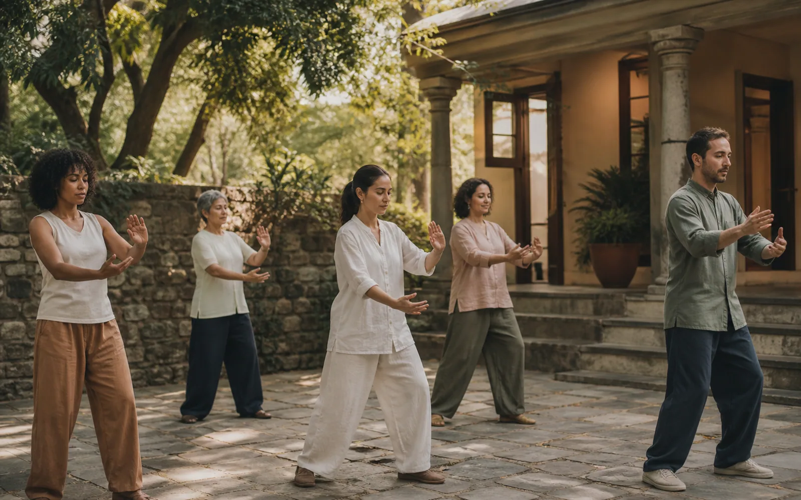

Cursos livres
Encontros acessíveis para conhecer um tema, experimentar uma prática e ampliar repertórios.
O conhecimento
Aprender, no Potala, é transformar conhecimento em experiência — com tempo para estudar, praticar e integrar.
Conhecer os caminhos01
Aprender por inteiro
Os cursos aproximam tradições de cuidado, arte, filosofia e práticas integrativas. A proposta não é apenas transmitir uma técnica, mas criar compreensão, autonomia e presença.
Cada percurso respeita o ritmo de quem chega: há encontros breves para experimentar e formações extensas para aprofundar uma escolha.
Formatos de aprendizagem
As turmas mudam ao longo do ano. Esta página apresenta as formas de aprender; a programação mostra o que está aberto agora.
Encontros acessíveis para conhecer um tema, experimentar uma prática e ampliar repertórios.
Percursos mais longos, com base conceitual, acompanhamento e prática supervisionada.
Aprendizagem pela experiência: corpo, criação, escuta e convivência em movimento.
Espaços contínuos para ler, dialogar e amadurecer conhecimento em comunidade.
Possibilidade de construir percursos para grupos, equipes e interesses específicos.
Cursos podem se conectar a atendimentos, atividades e conteúdos relacionados.
Ateliê de aprendizagem
Antes da inscrição, o Potala aproxima dúvidas, interesses e pessoas experientes. Aqui, o visitante pode compreender caminhos, imaginar uma nova turma e acompanhar como uma experiência coletiva começa a existir.
Aconselhamento Holístico
Uma orientação humana para comparar propostas, reconhecer o momento atual e construir um percurso de aprendizagem possível.
O que ajudaria você agora?
Uma conversa antes da escolha
Um encontro breve ajuda a esclarecer diferenças entre cursos, formatos e níveis de aprofundamento.
Solicitar conversa de orientaçãoMonte seu Curso
Registre um interesse ainda não contemplado na programação. Tema, formato e disponibilidade passam a orientar novas conversas com facilitadores e com a comunidade.
Nesta prévia, suas escolhas ficam apenas nesta tela e não são enviadas ao Instituto.
Turma em formação
Em vez de esperar uma confirmação sem contexto, cada participante poderá ver o grupo se formar, a disponibilidade do facilitador e as próximas decisões.
Exemplo de acompanhamento
O conhecimento ganha sentido quando encontra a vida.
Continue a jornada
Veja as turmas atuais ou conheça os atendimentos que dialogam com esses saberes.
Existem conhecimentos que só florescem quando saem dos livros e passam a fazer parte da rotina. Algumas experiências precisam ser vividas com o corpo, com a sensibilidade e com a convivência.
